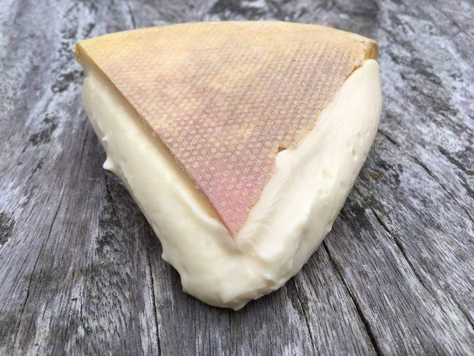

Question 1
Name each cheese and find the correct etymology for each one. Eg. 4 = J = "Cheddar"
1.
2.
3.

4.
5.
6.
7.
8.
9.
10.

11.
12.

A. A portmanteau of two Italian regions
B. From the arabic word "to be mild"
C. Means "slice" in Greek
D. Named after a county in California, and a businessmen who popularised it
E. Named after a typical dwelling place of farmers, who used to make it using the leftovers after making butter
F. A smelly cheese which is actually named after a variety of pear - since the rind is rinsed with fermented pear juice.
G. Named after a French region which gets its name from the Gaulish word for "hill"
H. Named after an Italian village. The village was named after the goddess Concordia
I. Named after the birthplace of Gary Lineker and David Attenborough, amongst others
J. Named after a Spanish region which means 'the stain'
K. From a Lombard word meaning "Ricotta"
L. Named after the Italian word for sheep.